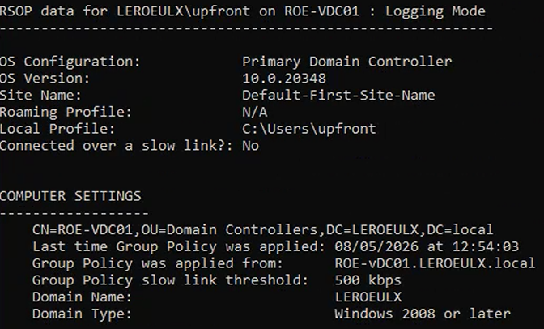
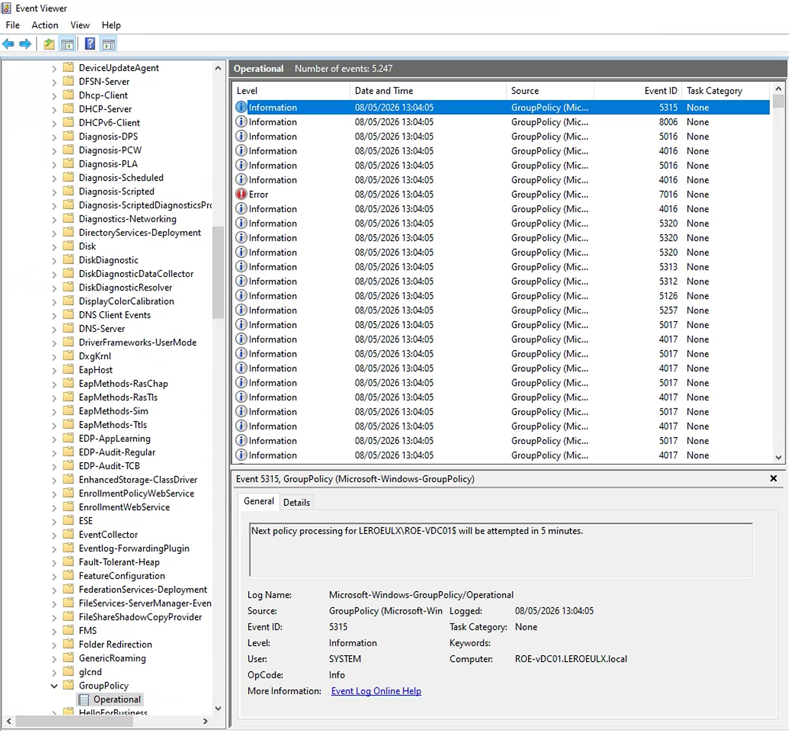

Tutorial – Active Directory Health Check
This check verifies that Group Policies (GPOs) are correctly applied on domain-joined machines.
Open Command Prompt and run:
gpresult /r
Verify that:

Open:
